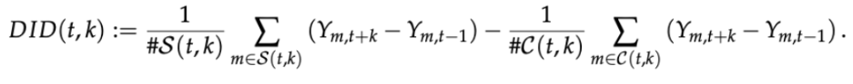
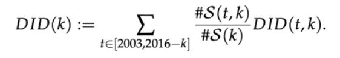
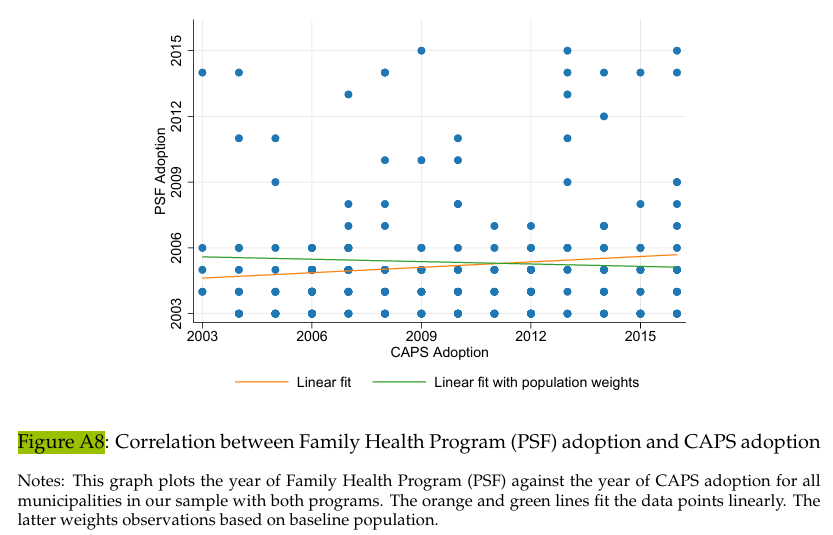

5.3 The Effects of a Large-Scale Mental Health Reform: Evidence from Brazil
Dias, Mateus, and Luiz Felipe Fontes, “The Effects of a Large-Scale Mental Health Reform: Evidence from Brazil”, American Economic Journal: Economic Policy, 2024, Volume 16, 257–89. https://www.aeaweb.org/articles?id=10.1257/pol.20220246
[Download Replication Do-File] [Download Codebook]
Link to the original replication package: https://www.openicpsr.org/openicpsr/project/195122/version/V1/view
5.3.1 Highlights
This paper evaluates how the introduction of mental health centers (CAPS) impacted the Brazilian health system, the patient’s health and how it impacted crimes.
Since the CAPS were constructed from 2003 to 2016, the authors use a staggered difference-in-differences design, conducting event studies for every outcome to make sure that there were no pre-trends pre-reform.
Our approach aims to give a detailed version of how to conduct a staggered difference-in-differences in Stata. Above all, the following Stata tricks will be reviewed:
How to create a table for the descriptive statistics using a
loopand amatrixHow to use the package did_multiplegt to create a Program in Stata and run it repeatedly to estimate an effect for multiple groups and multiple time periods.
How to create a clean
scatter plotto give a visual representation of a correlation
5.3.2 Introduction
When randomized experiments are not feasible, the difference in differences strategy is a very good substitute to estimate a causal effect, especially when some groups or regions are exposed to an intervention or policy, and some others are not.
This paper focuses on estimating the impact of a psychiatric reform of mental health centers in certain municipalities in Brazil. The paper observes the exposure to this psychiatric reform on outcomes related to public mental health such as the density of mental health professionals and psychiatric beds, outpatient production, public spending on mental health, and hospital admissions and deaths by cause. The reform introduces Psychosocial Care Centers (abbreviated as CAPS, for Centros de Atençao Psicossocial) as a community based substitute for inpatient care, as a way of increasing outpatient care in psychiatric health.
In order to estimate its effect, the paper exploits the staggered implementation of CAPS across different municipalities in Brazil within a difference-in-differences framework, since it began in 2002 up until 2016. Nevertheless, not enough CAPS centers opened in 2002, the authors chose to use 2003 as the starting year of the study. This empirical framework is based on an underlying assumption: the parallel trends assumption.
The latter states that in the absence of treatment, the evolution of the outcome variable follows the same trend for the treatment and control groups (municipalities). Concretely, if the reform had not been implemented, the differences in outcomes related to public mental health between each municipality would have remained constant overtime.
In addition, our framework takes into account the staggered factor and adjusts its Two Way Fixed Effect estimator in order to eliminate any bias in case of heterogeneous treatment effect. Hence, they follow the method proposed by De Chaisemartin and D’Haultfoeuille (2020).
Lastly, the standard errors are clustered at the municipality-level.
The novelty of this paper is giving proof that government policies can positively influence mental health while replacing traditional psychiatric institutionalization by community-based centers. The CAPS reform is correlated with a decrease in the number of hospitalizations, notably for long-stay admissions and among patients suffering from schizophrenia. Also, the paper is embedded in the literature on the links between crime and mental health. Furthermore, they find that violent crimes, such as homicides, increased, which is consistent with the Penrose hypothesis according to them (inverse correlation between the number of psychiatric in-patients and the prison population).
5.3.3 Good practices
5.3.3.1 Setup
Download and save the original dataset “final_dataset.dta” from https://www.openicpsr.org/openicpsr/project/195122/version/V1/view
Each do file should begin with the clear all command.
This command removes all data, programs and saved results from memory. It basically resets Stata’s environment in order to avoid errors caused by previous Stata sessions.
It is usually followed by the command set more off to ensure that the script runs without interruption.
The next step to start a do file is to specify the folder/directory you are working in by using the command cd.
Watch out! For the access paths on Windows, / are replaced by \\.
Set directory:
Once the path has been created, you can open the dataset with the command use "dataset" followed by the option clearto clear the current dataset from memory before loading the new one.
Open the dataset:
use "final_dataset.dta", clear
global replication "/Users/julianatorres/Desktop/M2 EDD/STATA SEMINAR/REPLICATION PROJECT/data_and_dofiles"
global results "${replication}/results_replication"
global data_final "${replication}/dataset_replication"
global data_original "${replication}/dataset_original"
global adofile "${replication}/stata-programs"
adopath ++ "${adofile}" With the command GLOBALS, we set up working directories that will indicate our working environment. We set up 5 globals:
global replication: this global will indicate our working environment where all the other globals will be located (the main folder)
global results: to store our outputs (tables, graphs, figures)
global data_final : indicates where our new dataset is stored
global data_original: indicates where the original dataset is stored
global adofile : indicates where we have stored any adofiles
Adofiles: Adofiles contain user written programs that have written commands that are not automatically built in Stata. When you use a program, you are able to define and run a chunk of code repeatedly if needed. Adofile is just the text file that contains a stata program. In order for stata to search for the adofiles needed to run our code, we set up our Stata adopath. The command adopath++ add an existing directory to the beginning of the search path stored in the global macro “adofile”. This add the directory specified in the macro “adofile” to the Stata adopath.
5.3.4 Descriptive Statistics
One main concern for a difference-differences strategy is the pre-trends before the CAPS implementation. Table A2 gives us the mean outcomes for the hospitalizations, mortality and several health outcomes, comparing municipalities that have been treated (the ones that implemented a CAPS for the first time in the period 2003 - 2016) to the ones that have not. The baseline year is 2002.
The matrix allows us to store the summary statistics, giving the variables (outcomes) in the rows and the results in columns. The local states where the results go in the matrix and the loop iterates the results for every variable.
On average, before the implementation of any CAPS, the Brazilian municipality had similar characteristics (socioeconomic characteristics measured by sex, age and income) and similar healthcare systems levels (number of hospitalizations, mortality, outpatient care and mental health facilities).
This is reassuring, given that no pre-trends divergence were detected with these statistics.
Create new variables:
generate(abbreviated togenorg): used to create new variables.Condition
if caps == 1: the new variablecaps_implementedwill store the year when the CAPS program was implemented in a given observation (in our case, in a municipality).
Missing values:
A common problem when creating new variables is the presence of missing values, noted (.) for numeric values and ““ for string values.
Indeed, in
caps_implemented, observations wherecaps =!1will logically have missing values for the year (you can’t know the year of implementation if the CAPS hasn’t been implemented yet!).The problem is that missing values (.) are treated by default as the smallest possible numeric value. So we wouldn’t be able to calculate the minimum implementation year of CAPS (ie. the lowest value of
caps_implemented).
How to deal with missing values:
recode: replaces these (.) with the numeric value9999.This popular strategy ensures that we don’t take into account missing values (corresponding to non-implementation years in our new variable), since year-
9999is far too large to affect the minimum year.
Create complex variables:
egenintroduces a mathematical or logical function - here themin()function - to create more sophisticated variables and can be combined with thebyprefix.bysort(bys) groups the data by the variableid_muni(representing each municipality). We then calculate the minimum value ofcaps_implementedfor each municipality (since each one can receive the treatment several times).As a result, the new variable
year_caps_implementedstores the first year when CAPS was implemented in each municipality. Since non-implementation years were recoded as9999, they will not affect the minimum calculation.
Once our interest variable is created and the output checked (ex commands: browse, tabulate, describe), we can permanently delete (drop) caps_implemented which was only temporary and is no longer needed.
Always keep your dataset clean!
g caps_implemented = year if caps==1
recode caps_implemented (.=9999)
bys id_muni: egen year_caps_implemented = min(caps_implemented)
drop caps_implemented tab year_caps_implemented rowtotal: computes the sum of values across multiple variables for each row.
egen pop_m =rowtotal(pop_m_10to19 pop_m_20to29 pop_m_30to39 pop_m_40to49 pop_m_50to59 pop_m_60to69 pop_m_70to79)
egen pop_f =rowtotal(pop_f_10to19 pop_f_20to29 pop_f_30to39 pop_f_40to49 pop_f_50to59 pop_f_60to69 pop_f_70to79)
egen pop_tot_10to79=rowtotal(pop_m pop_f)We now create variables for the total population per age range, in order to calculate their share in total population:
g fracpop_m =pop_m/pop_tot_10to79
egen pop_tot_10to19 = rowtotal (pop_f_10to19 pop_m_10to19)
egen pop_tot_40to49 = rowtotal (pop_f_40to49 pop_m_40to49)
egen pop_tot_70to79 = rowtotal (pop_f_70to79 pop_m_70to79)
g fracpop10to19 = pop_tot_10to19/pop_tot_10to79
g fracpop40to49 = pop_tot_40to49/pop_tot_10to79
g fracpop70to79 = pop_tot_70to79/pop_tot_10to795.3.4.1 Matrix creation
matrix:
We create a matrix and name it Q
It includes 41 rows and 4 columns.
So far, we only set its structure: values are considered as missing (.)
5.3.4.2 Descriptive statistics computation
Macros and Loops:
A local macro is like a shoe box where you can store variables, by category for instance. You can name this box so that you know what kind of variables are inside. This helps to keep your code as simple as clean!
- Command
local
A loop is a structure which repeats a set of commands multiple times, typically for different variables, values, or conditions. It is often combined with a macro where the variables are stored. It’s a really useful tool for repetitive tasks, thus simplifying your code!
- Command
foreach
By playing with those commands, we can build our summary statistics table by looping the variables in the respective macros.
Macro
iformats the rows of the table, and the loop helps to go from row to row in the same column.Macro
vgroups the variables by type, and the loop helps to operate the sum of these variables by observation according to a conditionif. This allows us to calculate the means and store them in their respective columns. The macro includes the following categories of variables: (i) hospital admissions, (ii) mortality, (iii) ambulatory care, (iv) providers.We used a similar approach for the baseline covariates: Pop size, fraction of pop by gender and age, bolsa familia transfers, and gdp per capita.
The conditions (if) for each column are the following:
column 2: values in baseline year (2002): ALL the municipalities
column 3: excludes values in 2002 and the missing values: TREATED municipalities
column 4: the missing values excluding 2002: UNTREATED municipalities
Computation and Input:
- Hospital admissions:
local i 2
foreach v in ha_by_md ha_schizo2 ha_mood ha_stress ha_substance ha_demencia ha_retardation ha_md
{
local i `i'+1
sum`v' if year==2002
matrix Q[`i',2]=`r(mean)'
sum `v' if year_caps_implemented!=9999 & year_caps_implemented!=2002 & year==2002
matrix Q[`i',3]=`r(mean)'
sum`v' if year_caps_implemented==9999 & year==2002
matrix Q[`i',4]=`r(mean)'
}- Mortality:
local i `i'+2
foreach v in suicide overdose death_alcohol death_mental_health homicides
{
local i`i'+1
sum `v' if year==2002
matrix Q[`i',2]=`r(mean)'
sum`v' if year_caps_implemented!=9999 & year_caps_implemented!=2002 & year==2002
matrix Q[`i',3]=`r(mean)'
sum `v' if year_caps_implemented==9999 & year==2002
matrix Q[`i',4]=`r(mean)'
}- Ambulatory care:
local i `i'+2
// procedures
preserve
keep if year_caps_implemented>2009
foreach v in op_by_psychiatrist op_by_psycho op_by_socialwork op_by_therap
{
local i `i'+1
sum`v' if year==2008
matrix Q[`i',2]=`r(mean)'
sum `v' if year_caps_implemented!=9999 & year_caps_implemented!=2002 & year==2008
matrix Q[`i',3]=`r(mean)'
sum`v' if year_caps_implemented==9999 & year==2008
matrix Q[`i',4]=`r(mean)'
}
restore
// drugs
foreach v in dispense_antipsychotics
{
local i `i'+1
sum`v' if year==2002
matrix Q[`i',2]=`r(mean)'
sum `v' if year_caps_implemented!=9999&year_caps_implemented!=2002&year==2002 matrix Q[`i',3]=`r(mean)'
sum`v' if year_caps_implemented==9999&year==2002
matrix Q[`i',4]=`r(mean)'
}- Providers:
local i `i'+2
foreach v in psychiatrist_tot psychologist_tot socialworker_tot therapist_tot psychiatric_beds
{
local i`i'+1
sum `v' if year==2006
matrix Q[`i',2]=`r(mean)'
sum`v' if year_caps_implemented!=9999&year_caps_implemented!=2002&year==2006
matrix Q[`i',3]=`r(mean)'
sum `v' if year_caps_implemented==9999&year==2006
matrix Q[`i',4]=`r(mean)'
}- Some baseline covariates:
local i `i'+2
// N
local i `i'+1
count if year==2010&year_caps_implemented!=2002
matrix Q[`i',2]=`r(N)'
count if year==2010 & year_caps_implemented!=9999 & year_caps_implemented!=2002
matrix Q[`i',3]=`r(N)'
count if year==2010 & year_caps_implemented==9999 & year_caps_implemented!=2002
matrix Q[`i',4]=`r(N)'
// Pop size, fraction of pop by gender and age, bolsa familia transfers, and gdp per capita
foreach v in pop_ fracpop_m fracpop10to19 fracpop40to49 fracpop70to79 log_pbf_pc loggdppc
{
local i `i'+1
sum`v'
matrix Q[`i',2]=`r(mean)'
sum `v' if year_caps_implemented!=9999 & year_caps_implemented!=2002
matrix Q[`i',3]=`r(mean)'
sum`v' if year_caps_implemented==9999
matrix Q[`i',4]=`r(mean)'
}5.3.4.3 Replication of the Table A2
We finalize the preparation of the table by creating a dataset based on the matrix Q, formatting the rows and columns with descriptive labels, and exporting the resulting table to an Excel file.
Remove any existing dataset from memory
Create a new dataset with 41 observations (rows), corresponding to the rows in the matrix Q
Convert the matrix into a dataset: by converting the matrix columns into variables (ie. dataset columns), with the option n(main) to name the new variables
main1, … main4Please note that you need to convert the variable main1 (numeric by default) into a string variable since we will assign it text as column 1 of the matrix contains the names of the variables corresponding to the summary stats
Also, be careful to replace missing values (.) (numeric) in main1 with an empty string (““)
After those settings, we can assign descriptive labels to each row of main1
Finally, we export the descriptive statistics table in excel
clear
set obs 41
svmat Q, n(main)
keep main
tostring main1, replace replace main1 = "" if main1=="."
replace main1 = "Hospitalizations (per 10,000 pop.)" in 2
replace main1 = "Mental and behavioral disorders" in 3
replace main1 = "Schizophrenia" in 4
replace main1 = "Depression/bipolarity" in 5
replace main1 = "Stress-related disorders" in 6
replace main1 = "Psychoactive substance abuse" in 7
replace main1 = "Mental retardation" in 8
replace main1 = "Dementia" in 9
replace main1 = "Others" in 10
replace main1 = "Mortality (per 10,000 pop.)" in 12
replace main1 = "Mental disorders" in 16
replace main1 = "Homicide" in 17
replace main1 = "Suicide" in 13
replace main1 = "Overdose " in 14
replace main1 = "Alcoholic and chronic liver disease " in 15
replace main1 = "Outpatient Care (per 10,000 pop.)" in 19
replace main1 = "By psychiatrists (2008)" in 20
replace main1 = "By psychologists (2008)" in 21
replace main1 = "By social workers (2008)" in 22
replace main1 = "By occupational therapists (2008)" in 23
replace main1 = "Antipsychotic drugs" in 24
replace main1 = "Mental Health Facilities (per 10,000 pop.)" in 26 replace main1 = "Psychiatrists (2006)" in 27
replace main1 = "Psychologists (2006)" in 28
replace main1 = "Social workers (2006)" in 29
replace main1 = "Occupational therapists (2006)" in 30
replace main1 = "Psychiatric beds (2006)" in 31
replace main1 = "Municipality Characteristics" in 33
replace main1 = "Number of municipalities" in 34
replace main1 = "Population" in 35
replace main1 = "Men" in 36
replace main1 = "Age 10--19" in 37
replace main1 = "Age 40--49" in 38
replace main1 = "Age 70--79" in 39
replace main1 = "PBF per capita" in 40
replace main1 = "GDP per capita" in 41
export excel using "C:\\Users\\adamg\\OneDrive\\Documents\\SORBONNE\\COURS\\M2\\\\td stata\\Replication", replace5.3.5 Empirical strategy: formalization of strategy and defining estimator
The paper builds estimators adapted to treatment effect heterogeneity. Authors formalize the construction of the strategy by defining a causal parameter of interest in order to estimate the average treatment effects of the staggered implementation of a CAPS center across municipalities starting at year 2003.
The empirical strategy’s main focus is to estimate B(k) the average treatment effect across all switchers (treatment groups municipalities) k periods after each switcher received the treatment. When we refer to “receiving the treatment” it means when switchers implemented a CAPS for the first time.
Authors first define different cells (m,t) that design a municipality m at year t. Dm,t denotes our treatment. This dummy variable takes the value of 1 if the municipality m gained a CAPS for the first time at year t and 0 otherwise. This means that for any year before t, this variable should be 0. Hence, for any consecutive years t-1 and t, Dm,t-1 = 0 and Dm,t = 1.
Authors then define different sets S(k) and S(t,k) and C(t,k):
S(k) denotes the set of treated municipalities (switchers) observed k periods after their treatment year t (t+k ≤ 2016). There are different sets of S(k) depending on the value of k
S(t,k) denotes the set of municipalities that received a CAPS center for the first time at the same year t and observed k periods after treatment. There are different sets of S(t,k) depending on the combination of (t,k).
C(t,k) denotes the set of municipalities that are not treated at year t+k.
Under the DiD framework and its identifying assumption, the outcome of the non-treated municipalities (non-switchers) can be used as a counterfactual when observing the evolution of the switchers. Since the paper focuses on the effect of CAPS implementation observed at year t+k, authors establish that:
For all municipalities part of S(t,k), Dm,t-1 = 0 and Dm,t = … Dm,t+k = 1.
For all municipalities part of C(t,k) Dm,t-1 = 0 and Dm,t = … Dm,t+k = 0.
Consequently, for a fixed event-time k ≥ 0 authors build a 2x2 DID estimator for the cohort of municipalities that implemented a CAPS at t for the first time:
 Assuming that C(t,k) and S(t,k) would have evolved in parallel in absence of treatment, this estimator aims to estimate the average treatment effect for municipalities that implemented a CAPS at period t, observed k periods later.
DID(t,k) denotes the difference in evolution of mean outcome between two sets of groups: the set of municipalities that received the treatment at period t (t ≤ 2016 - k) and the set of municipalities that remained untreated until t+k.
By establishing DID(t,k), authors now define the estimator of B(k), which is a weighted average of all the DID(t,k) estimators:

The weight set for each DID(t,k) estimator depends on the size of each treated cohort.
5.3.6 Main results
The CAPS reform had a major impact on the supply of professionals, findings show an increase of 0.84 professionals per 10,000 people. The major contribution of the CAPS reform is on outpatient care. All else being equal, there is an average increase of 264.2 procedures per 10,000 people per year. All else being equal, there is an average decrease of long stay hospital stays per 10,000 people per year. No significant effect is found on mortality rates. (cf. event studies) Also, all else being equal, there is an average decrease in long-stay hospital admission. Finally, in terms of homicide, the reform can be correlated to an increase of 0.149 deaths per 10,000 people on average.
5.3.7 Code replication
This code is used to reproduce all main outcomes in forms of figures and tables. We will only reproduce the impact of the CAPS reform on the number of long stay admissions in hospitals that is presented in the form of an event study. To replicate this outcome, we will need to estimate the dynamic treatment effects, the average treatment effect and multiple placebo tests to see the treatment effect before the CAPS reform was implemented and define the baseline value ong long stay hospital admissions for the baseline year which is 2002.
In order to estimate the effect, we will use the command program. A program in stata is a subroutine that allows you to run a chunk of code all at once and repeatedly. We use this because in order to estimate all of the elements mentioned above, the authors needed to run all of those estimations for multiple groups (switchers) and multiple time periods for each of the primary and secondary outcome.
Authors used the the commands from the user written program did_multiplegt redacted by Chaise et d’Hautefeuille (2022). This package sets up a list of commands that generalizes the standard DID estimator with two groups, two periods and a binary treatment to situations with many groups, many periods and a potentially non-binary treatment. For each pair of consecutive time periods t-1 and t and for each value of the treatment d, the command computes a DID estimator comparing the outcome evolution among the switchers, the groups whose treatment changes from d to some other value between t-1 and t, to the same evolution among control groups whose treatment is equal to d both in t-1 and t. The did_multiplegt (DIDM) estimator is then equal to the average of those DIDs across all pairs of consecutive time periods and across all values of treatment. Under a parallel trends assumption, DIDM is an unbiased and consistent estimator of the average treatment effect among switchers, at the time period when they switch. (source: did_multiplegt adofile)
When a program is ran, it’ll run the chunk of code that is inside the program
5.3.7.1 Set up program
cap program drop did
program did, rclass
args outcome group time treatment cluster dynamic placebo bootstrapreps textx texty ylow ydelta yup year
Command
caps program drop did: this is to drop any previous program named did that was installed or that was previously runCommands
program did,rclass: this designates the start of the program did that was redacted by the authors using the commands made available in the packagedid_multiplegt. Therclasscommand is used so that results are stored temporarily in r(), a storage area for “return results”. This usually stores results in matrices, macros, or scalar so that they can be accessed immediately after running the code.Command
args: This command is used to set up the arguments that will later on be referred to in the code inside the program did. This command defines a list of local macros that are referenced when the did program is ran. These macros capture inputs passed to the did program. In our case, these arguments have multiple tasks such as : establishing the program’s configuration like the variables that are needed for the estimation (treatment, group, time, outcome), the number of dynamic and placebo periods, how many bootstrap repetitions and also for defining the the settings of our matrices and our graphs.
5.3.7.2 Set up Matrix that will store results
//--------------------------------------------------------------------
// SET UP OF THE MATRIX THAT WILL STORE THE RESULTS
//--------------------------------------------------------------------
* number of rows of matrix that will store results
local row= `placebo'+`dynamic'+1
* number of columns (event-study, upper bound of CI, lower bound of CI, se, N, N of switchers)
loc column 6
* label
local labelrow
forvalues i=-`placebo'/`dynamic'{
local labelrow: display "`labelrow' `i'"
}
* Sequence of placebos starting at 1 and going up
local placeboup
forvalues i=1/`placebo'{
local placeboup: display "`placeboup' `i'"
}
* Sequence of placebos starting at 1 and going down
local placebodown
forvalues i=`placebo'(-1)1{
local placebodown: display "`placebodown' `i'"
}
*
*Defining Controls
global X loggdppc log_pbf_pc pop_m_10to19 pop_m_20to29 pop_m_30to39 pop_m_40to49 pop_m_50to59 pop_m_60to69 pop_m_70to79 pop_f_10to19 pop_f_20to29 pop_f_30to39 pop_f_40to49 pop_f_50to59 pop_f_60to69 pop_f_70to79 mhpf02trend estab02trend popruraltrend analfabs_2000trend sharepobres2000trend theil2000trend lnsaudepctrend poptotaltrend temperaturetrend municipality_areatrend distance_to_capitaltrend altitude_100trend rainfalltrend lnpbfpctrend lnpibpctrend
For example for the command local row= placebo'+dynamic'+1 it alludes to the macros placebo' and`dynamic' that when the code will be run, these macros will be replaced by the values stored in them. It will display a row for each placebo period and a row for each dynamic (future) period, plus 1 additional row.
Now we use a combination of local macros and loops in order to define the setting of the matrix that will store the results. We create macros that are initially empty, and we loop in the values “i” that are defined by the eachvalue command so that the loop will generate the numbers from these variables. For example, for the local labelrow, we use a loop that iterates all values going from -placebo to dynamic. If -placebo = -3 and dynamic = 3 then local labelrow will store values -3, -2, -1 0 ,1 ,2, 3.
The
displaycommand integrate the values ofiinto the local “Labelrow”, separated by a space.This is done for the local
placeboupthat gives you the sequence of placebos from 1 and up and the localplacebodwthat gives the sequence of placebos from 1 and down.Command
global: Here the command global defines a GLOBAL MACRO. This is a macro that can be accessed anywhere in the Stata. It is different than the local macros since they are only accessible within the scope where they are defined (a program for example). We create then a global “X” in order to store all of the control variables that we will use in our regression. This way we don’t have to write them all over again but we can just refer to our global in order to take them into account.
5.3.7.3 Defining our DiD estimator : package did_multiplegt
*** In this part we set up the DiD estimator using the commands from package did_multiplegt from CHAISE & D'HAUTEFEUILLE (AER, 2022).
* Dta
use "${data_final}/dataset_v1", clear
* keeping what is relevant
keep if year>=`year'
keep `treatment' `group' `time' id_state `cluster' `outcome' ${X}
* generating the year in which the treatment starts
g `treatment'_implemented=year if `treatment'==1
bys id_muni: egen year_`treatment'_implemented=min(`treatment'_implemented)
g eventtime`treatment'=year- year_`treatment'_implemented
drop year_`treatment'_implemented `treatment'_implementedWe open our dataset dataset_v1
Now we build our DiD estimator using the commands from the did_multiplegt program from Chaise et D’hautefeuille.
We use the command keep if to only keep in our estimator the arguments and variables that are needed for our results
Command g used to generate a variable which designates the year the treatment was implemented Command BYS: this designates that we want the year the treatment was implemented for each municipality (id_muni).
We calculate a new variable with EGEN which shows the first year the treatment was implemented for each municipality by using the previously created variable treatment'_implemented and calculating the minimum value of treatment'\_implemented for each municipality.
We then generate a new variable using year_treatment'_implemented which captures the amount of time the treatment has been active this is defined by doing the difference between the year of the study and the year the treatment was implemented for the first time. With the command g (generate) we create the variable eventtime_treatment. Finally we drop all previously created variables except for eventtime treatment.
* estimator
did_multiplegt `outcome' `group' `time' `treatment', trends_nonparam(id_state) controls(${X}) placebo(`placebo') dynamic(`dynamic') breps(`bootstrapreps') cluster(`cluster') covariances average_effect(simple) We set up our estimator where we set up our main parameters by referencing the local and global macros that we defined before. This estimator includes controls for covariates, placebo tests, accounts for clustered standard errors and estimates the average treatment effect and dynamic treatment effects. We also take into account covariances between different groups and periods in order to test the robustness of the estimation as well as taking into account for group specific trends at the state level (id_state).
command di : “di” stands for debugging. This command is used in order to make sure that there are no bugs or errors in your code. This is a kind of check point to show that up until here, no bugs or errors show.
5.3.7.4 Construction of matrices to store final results
****In this part we build the matrix storing results
// Empty matrix to be filled
matrix Q=J(`row',`column',.)
// Label rows
matrix rown Q = `labelrow'
//Add effects, ci, se, n, n of switchers
forvalues i=0/`dynamic'{
local m "`i'+`placebo'+1"
local row: display `m'
matrix Q[`row',1]=`e(effect_`i')'
matrix Q[`row',2]=`e(effect_`i')'+`e(se_effect_`i')'*1.96
matrix Q[`row',3]=`e(effect_`i')'-`e(se_effect_`i')'*1.96
matrix Q[`row',4]=`e(se_effect_`i')'
matrix Q[`row',5]=`e(N_effect_`i')'
matrix Q[`row',6]=`e(N_switchers_effect_`i')'
}We define a Matrix Q that stores values for estimating average treatment effects, placebo tests and dynamic treatment effects. We also build variance-covariance matrices for the placebo tests and dynamic effects in order to assess the statistical inference of the results as well as their robustness.
We use a loop with the forvalues to repeat the set of commands for time periods going from 0 to the value of the macro dynamic. For each time period i (for each iteration), we store the estimated treatment effect in column 1, the upper and lower bound of the 95% confidence interval of this coefficient in column 2 and 3, colmun 4 stores the clustered standard errors, column 5 stores the number of observations for time period i and column 6 presents the number of switchers going from untreated to treated in time period i.
//Add placebos, ci, se, n
local up `placeboup' //xxixx
local down `placebodown' //xxixx
local n : word count `up'
forvalues i = 1/`n' {
local u : word `i' of `up'
local d : word `i' of `down'
matrix Q[`u',1]=`e(placebo_`d')'
matrix Q[`u',2]=`e(placebo_`d')'+`e(se_placebo_`d')'*1.96
matrix Q[`u',3]=`e(placebo_`d')'-`e(se_placebo_`d')'*1.96
matrix Q[`u',4]=`e(se_placebo_`d')'
matrix Q[`u',5]=`e(N_placebo_`d')'
}
We then add to our Matrix Q the placebo tests. We set up macros to define the number of placebo periods and then we use a loop to estimate the treatment effect, 95% confidence interval, standard errors and number of observations for each of the placebo periods.
* Build Variance-Covariance matrix for placebos
matrix COVQp = J(`placebo',`placebo',.)
matrix COVQp[1,1]=`e(se_placebo_1)'^2
forvalues i = 2/`placebo' {
matrix COVQp[`i',`i']=`e(se_placebo_`i')'^2
forvalues j=1/`=`i'-1' {
matrix COVQp[`i',`j']=`e(cov_placebo_`j'`i')'
matrix COVQp[`j',`i']=`e(cov_placebo_`j'`i')'
}
}
* Vector of placebo coef
matrix Qp = J(`placebo',1,.)
forvalues i=1/`placebo'{
matrix Qp[`i',1]=`e(placebo_`i')'
}
* F test: all placebos=0
matrix COVQp_inv=invsym(COVQp)
matrix Qp_t=Qp'
matrix U_g=Qp_t*COVQp_inv*Qp
scalar statistic_joint=U_g[1,1]/`placebo'
scalar p_joint=1-chi2(`placebo',U_g[1,1])
*Build Variance-Covariance matrix for dynamic effects
matrix COVQd = J(`dynamic',`dynamic',.)
matrix COVQd[1,1]=`e(se_effect_1)'^2
forvalues i = 2/`dynamic' {
matrix COVQd[`i',`i']=`e(se_effect_`i')'^2
forvalues j=1/`=`i'-1' {
matrix COVQd[`i',`j']=`e(cov_effects_`j'`i')'
matrix COVQd[`j',`i']=`e(cov_effects_`j'`i')'
}
}Finally we use forvalue loop command and local macros to create a variance-covariance matrix for the placebo tests, we estimate an F-test using the variance-covariance to make sure that all of the placebo coefficients come up to 0 and finally, we create another variance-covariance matrix to assess the precision of our estimated dynamic effects as well as the statistical inference of our estimates.
5.3.7.5 Calculation of average treatment effect
* Avg effects
// long run dynamic
scalar controls_effect = `e(effect_average)' // point estimate
scalar controls_effect_se = `e(se_effect_average)' // se
// short run dynamic
scalar controls_effect_short=(1/(3))*(e(effect_0)+e(effect_1)+e(effect_2)) // point estimate
scalar controls_effect_short_se=sqrt((1/(3^2))*(COVQd[1,1]+COVQd[2,2]+COVQd[3,3]+2*COVQd[1,2]+2*COVQd[1,3]+2*COVQd[2,3])) // se
* Avg placebo effects
scalar controls_placebo = 0
forvalues i=1/`placebo' {
scalar controls_placebo=controls_placebo+(`e(placebo_`i')') // summing all placebos
}
scalar controls_placebo=controls_placebo/`placebo' // point estimate
mata : st_numscalar("controls_placebo_se", (1/(`placebo'^2))*sum(st_matrix("COVQp")))
scalar controls_placebo_se=sqrt(controls_placebo_se) // seWe now store the different estimations and values in scalars. The command scalarcreates a variable that stores numeric values. They are commonly used to hold results of estimations in programs and do-files. We create scalars to store the long run average treatment effect and its standard errors and short run average treatment effect and its standard errors. Furthermore, we also define scalars for the average placebo effects which is done by summing all of the coefficients and dividing my the number of placebo periods. Finally, we calculate the standard errors for the placebo average treatment effect.
5.3.7.6 Construction of tables and event study
In this part, we store the results in a table format. Even though we do not replicate a table, it is necessary to go through this part in order to plug in the results in the table into the even study. The event study is a visual support. This is how it is done by authors so we decided to follow their same methodology.
* event-study
svmat Q, n(controls)
rename controls1 controls_b // point estimate
rename controls2 controls_ciup // upper CI
rename controls3 controls_cidw // lower CI
rename controls4 controls_se // SE
rename controls5 controls_n // N
rename controls6 controls_nswitch // N of swithcers
* long run avg dynamic
gen controls_effect = scalar(controls_effect) in 1 // point estimate
gen controls_effect_se = scalar(controls_effect_se) in 1 // SE
* short run avg dynamic
gen controls_effect_short = scalar(controls_effect_short) in 1 // point estimate
gen controls_effect_short_se = scalar(controls_effect_short_se) in 1 // SE
* avg placebo
gen controls_placebo = scalar(controls_placebo) in 1 // point estimate
gen controls_placebo_se = scalar(controls_placebo_se) in 1 // SE
* baseline mean
summ `outcome' if eventtime`treatment' >= -`placebo' & eventtime`treatment' <= -1
g mean_baseline = `r(mean)' in 1 // mean
g se_mean_baseline = `r(sd)' in 1 // sd
* f test: all placebos =0
g f_test = statistic_joint in 1 // statistic
g pvalue_f_test= p_joint in 1 // p value
* saving dataset with the results
keep controls* mean* se_mean_baseline f_test pvalue_f_test
keep if controls_b!=.
save "${tables}/t`treatment'`outcome'r.dta", replace
We generate new variables from the results stored in the Matrix Q. More specifically, we generate variables for the estimate of the treatment effect, the upper and lower bounds of the confidence interval, the standard errors of the estimation, the number of observations and the number of switchers. We then generate variables to store the long run average dynamic effect, the short run average treatment effect and the placebo treatment effect results. Finally, we keep all variables that are relevant to our estimation, specially all of the ones that start with `controls_b`and export the dataset.
//-------------------------------------------------------------------------
// GRAPH
//-------------------------------------------------------------------------
*** here we export our results in a event study graph
local b: display %4.3f controls_effect
local se: display %4.3f controls_effect_se
local bpl: display %4.3f controls_placebo
local sepl: display %4.3f controls_placebo_se
local meany: display %4.2f mean_baseline
local pftest: display %4.2f pvalue_f_test
coefplot (matrix(Q[,1]) , ci((Q[,2] Q[,3])) pstyle(p1) msymbol(O)) ///
, yline(0, lcolor(red)) xline( `=`placebo'+1', lcolor(gs7) lpattern(dash)) vertical ytitle("Treatment Effect") xtitle("Time Since Treatment") ciopts(recast(rcap)) ///
text(`textx' `texty' "Average Treatment Effect: `b' (`se')" "Average Placebo Effect: `bpl' (`sepl')" "Baseline: `meany'" " " "Joint significance of placebo effects: `pftest'" , place(e) just(left) size(small)) ylabel(`ylow'(`ydelta')`yup')
graph export "${figures}\f`treatment'`outcome'r.pdf", as(pdf) replace
graph save Graph "${results}/f`treatment'`outcome'r.gph", replace
end Finally we format our variables to be able to create event study visuals. We then set up local macros to store the previously created variables and we use the package coefplotto plot our graphs.
command end: this command designates that the program is over.
5.3.7.7 DiD estimation
Now when we will run our DiD regression, it will run all the lines of code stored in the program for each outcome. We only ran this for one outcome but it is meant to be done for all 5 types of outcomes in order to generate all tables and event study graphs.
foreach youtcome in longstay_ha_by_md {
di "`youtcome'"
qui did `youtcome' id_muni year ca id_muni 5 5 100 -1 1 -2 0.5 1 2002
}We finally run our DiD estimator for all groups and all time periods. Our estimator refers to each of the arguments that we define at the beggining of our program
args outcome group time treatment cluster dynamic placebo bootstrapreps textx texty ylow ydelta yup year. So in this case, youtcome is outcome, group is id_muni and so on so forth.
5.3.8 Robustness Check
One main concern for this paper to be empirically valid is that some other policies have been impulsed in the 2000s in Brazil, notably the famous PBF and Family Health Program (Programa Saude da Familia, PSF). In the robustness section, the goal is thus to make sure that those policies did not also impact our outcomes, since it would create an upward bias. They conduct several test, goal is to know if the adoption of both programs were correlated.
5.3.8.1 Figure A8 - Correlation between the PSF and the CAPS programs adoption

g treatment_year_psf=year if psf_imp==1
g treatment_year_caps=year if caps==1
bys id_muni: egen min_treatment_year_psf=min(treatment_year_psf)
bys id_muni: egen min_treatment_year_caps=min(treatment_year_caps)
drop if min_treatment_year_psf==2002
drop if min_treatment_year_caps==2002
duplicates drop id_muni, forceWe create new variables using the command generate to know if one or both of the progams have been implemented in the municipality and then, using egen we can get the earliest years when it has been, respectively for PSF and CAPS. We thus use bys to have an outcome for each municipality. We also make sure that we only have one observation by municipality doing a duplicates drop. We drop the observations before 2003, as 2002 is excluded from the analysis.
scatter min_treatment_year_psf min_treatment_year_caps /// lfit min_treatment_year_psf min_treatment_year_caps ///
lfit min_treatment_year_psf min_treatment_year_caps [aweight=poptotal], xlabel(2003(3)2016) ylabel(2003(3)2016) ///
ytitle("PSF Adoption") xtitle("CAPS Adoption") title("") note("") legend(col(2) nobox region(lstyle(none)) ///
order(2 "Linear fit" 3 "Linear fit with population weights") on) ///
graph export "${Figs}\psfcorrelation.pdf", as(pdf) name("Graph") replaceFinally, we create a scatter plot to show the correlation between the adoptions of both programs. Hence, we use the command scatter. By specifying lfit, we create a standard linear fit line and another that is weighted by the variable poptotal. The command legend (col(2)) adds a legend to explain what those two lines are. We use xlabel(2003(3)2016) to have the range of years we are studying with a 3-year interval. The graph export is followed by our global so that we make sure that our graph is downloaded in the right file.
Authors: Adam Guerfa, Léonie Patin, Juliana Torres Cortes, students in the Master program in Development Economics and Sustainable Development (2023-2024), Sorbonne School of Economics, Université Paris 1 Panthéon Sorbonne.
Date: December 2024